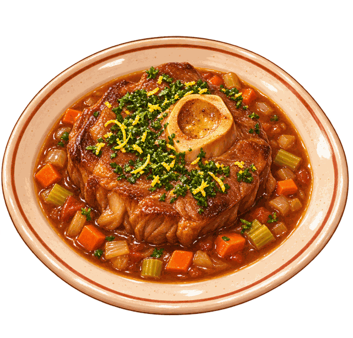

Todas as receitas › Milano
Cidade da viagem: Milano
Ossobuco com gremolada
No dialeto milanês, «ossobuco» significa «osso com buraco»: o buraco cheio de tutano.
Porções4
Preparo15 min
Cozimento1 h 40 min
DificuldadeMédia
Alérgenos: Glúten, Leite, Sulfitos, Aipo

Salvar no PinterestIngredientes
- Ossobucos de vitela · 4
- Farinha · 30 g
- Manteiga · 50 g
- Cebola · 1
- Vinho branco seco · 150 ml
- Caldo de carne · 500 ml
- Raspas de limão não tratado · 1
- Salsa picada · 1 ramo
- Alho · 1 dente
- Sal · a gosto
Passo a passo
- Corte a película ao redor dos ossobucos para não enrolarem e enfarinhe-os levemente.
- Doure os ossobucos na manteiga com a cebola picada por 10 minutos, 5 de cada lado.
- Adicione o vinho, junte uma concha de caldo, tampe e cozinhe em fogo baixo por 1 hora e meia, virando-os na metade do tempo e juntando caldo se for preciso.
- Pique juntos as raspas de limão, a salsa e o alho: é a gremolada.
- Desligue o fogo, espalhe a gremolada sobre os ossobucos, tampe por um instante e sirva, talvez com risoto à milanesa.
A dica do chef. O tutano dentro do osso é a parte mais gulosa: é saboreada com uma colherzinha.
Prepare esta receita também em Tavolata
No jogo você combina ingredientes, completa pedidos e restaura cidades italianas, de Firenze a Milano. Grátis, com receitas verdadeiras no Livro de receitas.
Baixar na App Store